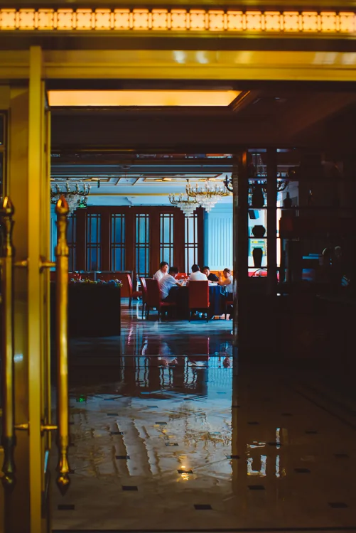
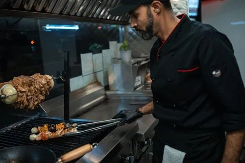
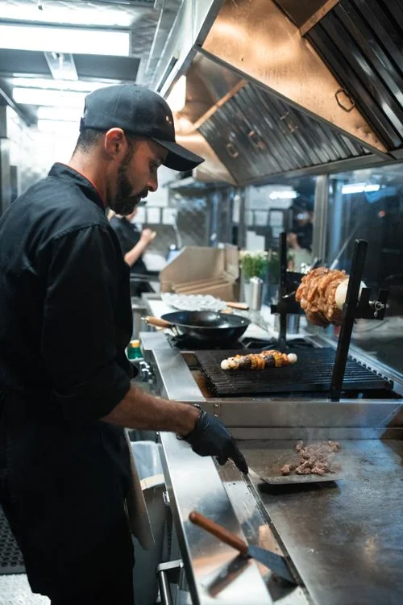

نارٌ حقيقية
نختار الفحم ونضبط حرارته، لأن الطعم الأصيل لا يعرف الطرق المختصرة.
حكاية تُروى على نار هادئة — منذ ٢٠١٢
نؤمن أن الطعام الطيب يجمع الناس، وأن أجمل التفاصيل تبدأ من إحساس الضيف بأنه في بيته.
البداية — حكاية من قلب القاهرة
في عام ٢٠١٢، اجتمع شغف عائلة بالمطبخ المصري مع حلمٍ بمكانٍ يكرم ضيفه كما يكرم بيته. بدأت التجربة بطاولة واحدة ونار فحمٍ لا تنطفئ؛ ومع كل طبق، كبرت الحكاية واتسعت المائدة.
حتى اليوم، ما زلنا نختار المكونات كل صباح، ونحضّر التتبيلات في مطبخنا، ونترك للأطباق وقتها. لا نبحث عن الاستعراض؛ نبحث عن نكهةٍ صادقة تعود إليها مرة أخرى.

ما لا نساوم عليه — مبادئنا
في كل تفصيلة، من اختيار المنتج إلى وداعك عند الباب.
نختار الفحم ونضبط حرارته، لأن الطعم الأصيل لا يعرف الطرق المختصرة.
نستقبلك بابتسامة صادقة، وننتبه للتفاصيل الصغيرة التي تجعل الزيارة ذكرى.
منتجات موسمية طازجة، تُعامل باحترام وتُترك نكهتها لتكون بطلة الطبق.
الأيادي وراء النكهة — فريقنا
لكل طبق فريقٌ يعتني به، من التحضير الأول إلى آخر لمسة على المائدة.

على الجمرنحافظ على الوصفات التي أحببناها، ونمنح كل مكوّن حقه من العناية والوقت.

خلف الكواليسمطبخنا مساحة عملٍ حيّة، فيها تُحضّر التتبيلات وتُراجع التفاصيل قبل أن تصل إليك.
رحلتنا — خطوة بعد خطوة
كبرت المائدة، وبقي الوعد كما هو: نكهة صادقة وكرم حاضر.
افتتاح أول مائدة صغيرة في القاهرة، بوصفة عائلية ونار فحم.
اتسعت قائمتنا بأطباقٍ مصرية ظلّ ضيوفنا يسألون عنها.
أضفنا جلساتٍ جديدة ومساحاتٍ أدفأ للّمة العائلية.
نرحّب بوجوه جديدة كل يوم، ونحتفظ بالسرّ في بساطة النكهة.
قصتنا أجمل حين تكون جزءًا منها
تعال كما أنت، فالمائدة لنا جميعًا.